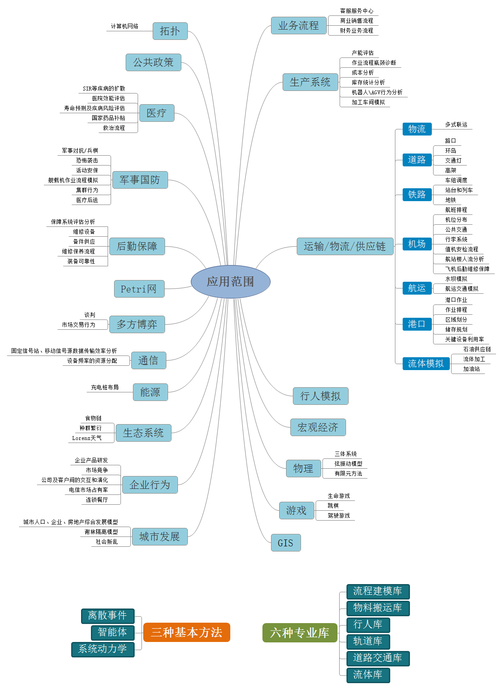

【仿真】Anylogic简介
条评论AnyLogic是一款应用广泛的，使用离散事件、系统动力学、多智能体等理论及技术进行系统混合建模和仿真的工具。它以最新的复杂系统设计方法论为基础，也是第一个将UML语言引入模型仿真领域的工具，也是唯一支持混合状态机这种能有效描述离散和连续行为的语言的商业化软件。
使用Anylogic我们可以将现实中事物的运行规律毫无保留的复制到由Anylogic建立的仿真模型当中，由软件将事物运行的可能情况进行模拟，为我们的管理及决策服务。
一、软件的特点
1. 多方法的建模环境
该软件支持的仿真方法包括：离散事件、智能体、系统动力学等，并且能将三种方法任意组合对任何复杂程度的业务系统进行仿真。AnyLogic可以使用多样的可视化建模语言如：流程图、状态图、行动图、存量及流量图等。AnyLogic是引入多方法建模的第一个工具，并且仍然是唯一具有这种能力的软件。
2. 动画和可视化
Anylogic可以方便地将流程图转换为具有三维和二维的交互式动画。以直观的方式将模型呈现给受众。使用图形对象将汽车、员工、设备、建筑物以及与业务相关的其他项目和流程可视化。将自定义的三维模型、图像、CAD图形和形状文件导入到仿真模型中。添加直观的导航和控件使模型可以交互，变成功能全面的交互界面。
3. 特定的行业库
AnyLogic提供了特定行业的专业库，且无需支付额外费用。包括：流程建模库（通用业务流程或工作流程）、流体库（矿业、石油和天然气等行业的散装货物和液体转移）、轨道库（铁路运输、码头和场站）、行人库（机场、体育场、车站或购物中心的行人流量）、道路交通库（用于汽车、卡车和公共汽车在道路、停车场和工厂场地上的移动）、物料处理库（模拟制造和仓储过程），行人库、轨道库和道路交通库对物体的运动和相互作用提供了详细的物理层的仿真，不需任何其他仿真工具的支持。
4. 基于智能体理论的专业仿真软件
AnyLogic是目前为止唯一一款能够构建工业级强度的基于智能体理论（ABM）的专业软件工具，ABM能够对以前一些很难应用仿真的领域进行建模，如市场营销、社会进程、医疗/传染病等。ABM允许利用大数据来建立具有个性化的属性（如消费者行为、特定技能、计划表、绩效数据或健康相关的资料）的智能体来构建大规模的模型。基于智能体的仿真使物流和制造业等传统领域的模型达到更加灵活和易用的新水平，它允许将实体和资源等转化为带有特定参数和行为的智能体。
5. GIS地图集成
AnyLogic提供了在仿真模型中使用GIS地图的独特功能：地图可用于供应链及物流网络或是其他需要将位置、道路、路径、区域等信息考虑在内的模型系统。内置地图搜索功能，允许用户利用地图数据轻松的定位到城市、街道、道路、医院、商店和公交站。可将模型元素放置在地图上，元素可根据实际空间数据沿现有道路和路径移动。可以使用AnyLogic免费提供的在线和离线地图或选择自定义的地图供应商来提供的基于瓦片的或shapefile文件的地图。
6. 云仿真
AnyLogic是唯一一款提供全方位云技术的仿真工具，它改变了人们运行模型的方式，可使用手机或平板电脑运行模型，通过Web为您的客户提供在线仿真分析。利用高性能的云计算进行复杂实验。使用安全的web存储器将模型私下交付给客户。在云社区公开共享仿真模型并且进行协作。
7. 丰富的实验框架
一套强大的预设实验可以从不同的角度分析模型。蒙特卡洛实验、敏感性分析实验以及参数变化实验帮助您了解随机性和参数变化如何影响模型的行为。仿真优化实验可以根据约束和需求为业务问题找到更好的解决方案。所有的实验都可以在AnyLogic云中使用高性能计算来执行。
8. 方便的数据互操作。
可以直接处理任何的数据，包括Oracle、MS SQL、MySQL、PostgreSQL、Access、Excel、和text文件。使用AnyLogic快速的内置数据库对模型进行配置和参数化，输出仿真数据和模型运行日志。
9. 模型导出和集成
将模型导出为独立的Java应用程序，并将其交付给客户。模型可对业务进行高级预测分析，使其成为现有数据流的一部分，将模型与CRM或BI系统进行集成。在操作软件（如ERP和MRP）中嵌入仿真模型，健全完整的计划并且降低风险。
10. 可扩展和自定义的平台
AnyLogic模型在Java中是完全可扩展的，为用户提供了无限的建模能力。您可以设计自定义实验以满足特殊需求，或是使用自己的算法及优化引擎。同样可以创建自定义实验工作流：如将敏感性分析实验和优化实验结合使用，将第一个实验的结果作为第二个实验的输入数据。为应用程序创建自定义对象和可重复使用的对象库，并与同事进行共享。模型运行时还可以从外部数据源配置模型，也就是说可以通过简单地更改输入数据来更改整个模型结构，这使得模型能够重复使用以解决许多类似的问题而不需要额外的模型构建工作。
11. 其他特性库
AnyLogic的库包括：对象类、动画仿真、信息类及为某些特殊应用领域或模型开发的模块。库可以使不同模型的对象可以得到很好的重复利用。AnyLogic自带了许多库文件，用户以此为基础可以方便的创建自己的模型。用户在AnyLogic中可以开发针对某一领域的库文件，来方便以后的建模。
12. 动画仿真
AnyLogic独创的技术能够快速地在模型编辑器中创建可互动的二维动画仿真，但这种动画仿真与模型是相互独立的。用户可以将单独的图与类连接起来，将封装的对象图放入容器对象图中。创建模型的时候再把这些对象图组装起来，这样图形的利用效率就很高。动画仿真包括一些基本的形状、图表，另外还有互动元素，如按钮、滚动条、编辑区域等，使用户可以在模型仿真时可进行操作。设计较为复杂的动画仿真时，可运用AnyLogic提供的多个API自定义动画。AnyLogic的动画仿真和它的模型一样，100%的Java程序语言使用户在模型中执行Applet程序，即可在浏览器上显示动画仿真。
13. 规则结构的系统
假设需要对一些有规则结构的系统建模，如网、托、链、环等，用户只需复制一些对象，定义对象的个数作为参数，然后用Java语句将对象连接起来即可。
14. 动态变化结构的系统
如果被设计系统中的对象或对象的连接被限定了生命周期，（即随系统的发展被创建和删除）用户可以在适当的时候调用创建/处理或连接/断开等函数。
15. 定制的信息传递
用户可通过定义信息传递的方式使相关信息智能化，如在信息中包装另一条信息、忽略端口的缺省行为、改变信息传递的语法等。例如当需要创建一个信息传递模型并在广播时注明地址，只需要在信息类中定义目的地，并在端口写上代码即可。
二、软件的应用范围
Anylogic的应用范围十分广泛，并且有一些比较成熟的案例，如下一些应用都有现成的模型：
